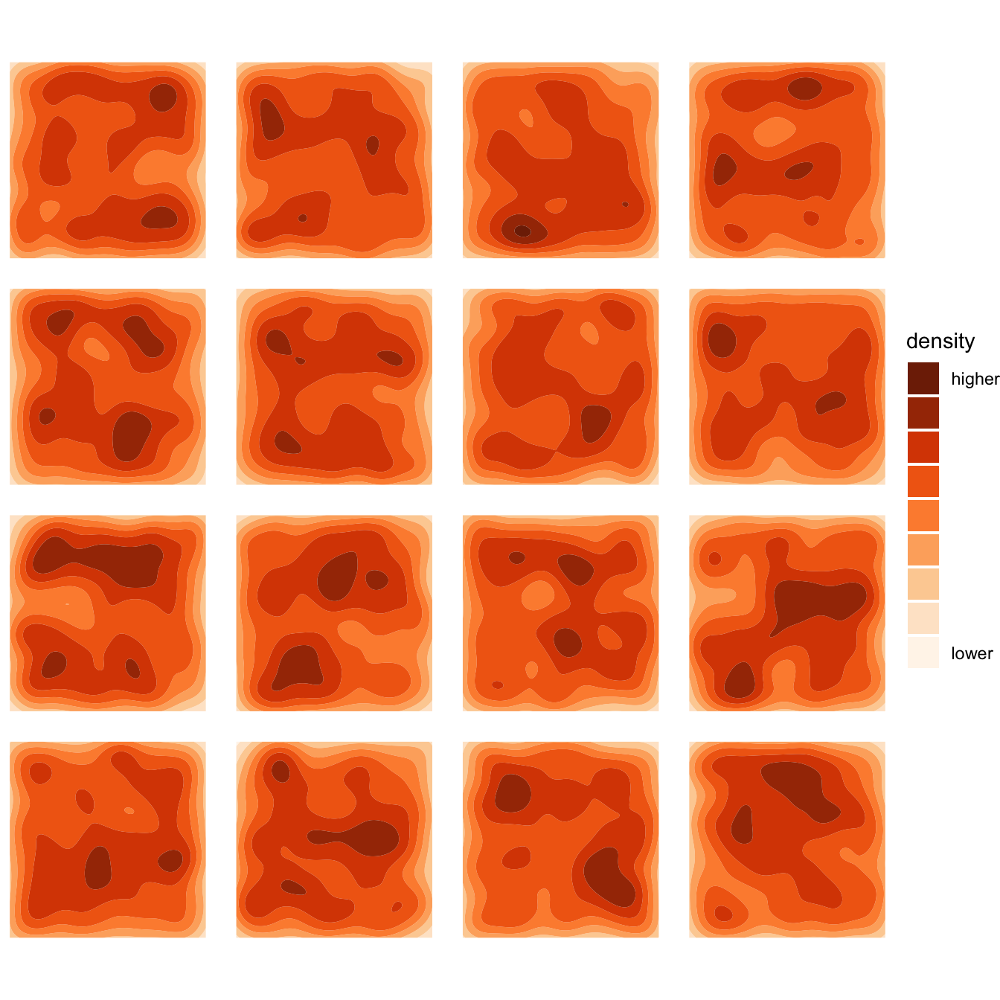

quiz(
caption = "",
question("Which *one* of these statements is true?",
answer("Crime is very geographically concentrated – we can expect half of crime to be concentrated in about 5% of micro places", correct = TRUE),
answer("Crime is usually not geographically concentrated at micro places"),
answer("Crime is slightly geographically concentrated – we can expect half of crime to be concentrated in about one quarter of micro places"),
answer("Crime is extremely geographically concentrated – we can expect half of crime to be concentrated in about 1% of micro places"),
correct = "That's correct – based on previous studies, we can expect half of crime to be concentrated in about 5% of micro places",
incorrect = "That's not correct – try re-watching the first video above and then try the question again.",
allow_retry = TRUE,
random_answer_order = TRUE
)
)11 Crime Mapping: Mapping hotspots
Learn what crime hotspots are, why they are important and how to map them.
To load the interactive tutorial for this chapter, copy and paste the following code into the RStudio console:
and press Enter.
11.1 What is a hotspot?
Crime is heavily concentrated in several different ways. A small number of offenders commit a large proportion of crime (even though most people commit minor offences occasionally) and a small number of people are repeatedly victimised. For most types of crime, a large proportion of crime occurs in a small number of places. A hotspot is a specific location or small area where an unusual amount of criminal activity occurs.
Crime hotspots can occur in several different forms. Watch this video to understand why hotspots are important in understanding and responding to crime.
Some places are chronic hotspots – they have more crime than surrounding areas over a sustained period (which may appear to be permanent). Chronic hotspots are often generated by a facility that draws vulnerable people into an area, such as a tourist attraction that draws crowds of people who are vulnerable to pickpocketing. Other places are acute hotspots, in which crime increases in a place that previously experienced no or few crimes. This may be the result of some change in the environment or how it’s managed, such as new management at a bar that ignores drug dealing that the previous owners would have not permitted.
When analysing hotspots, it is best to focus on small areas such as an apartment block, a shopping centre, a park or a single street. Focusing on smaller areas is important because resources to respond to crime are almost always limited, so it is important that those resources are directed where the problem is worst.
Analysing larger areas, such as a neighbourhood or a police sector, is much more difficult because larger areas are always made up of many smaller areas, each of which might be quite different from one another. This means that the factors causing one street to be a hotspot might be quite different from the factors that make another street in the same district into a hotspot. Conflating different problems with different causes makes it much harder to find effective ways to reduce crime in any one place.
These difficulties can be avoided (at least partly) by keeping hotspots small: in an urban area, a useful rule of thumb is that you should be able to stand in the middle of a hotspot and see the whole hotspot area.
Being able to identify hotspots using crime mapping is important because it forms a vital first step in many place-focused responses to crime. As an example of this, watch this video about how police in Philadelphia worked with researchers to use crime mapping to identify where to deploy foot patrols to reduce crime.
In this tutorial we will learn how to make maps that could be useful in identifying and responding to hotspots of crime. As an example, we will create this map showing hotspots of robbery in Nottingham, England.

11.1.1 Check your understanding
11.2 Showing the density of risk
In the tutorial on mapping area data we learned how to produce maps showing the incidence rate of crime by dividing the number of crimes by a measure of the population at risk of being targeted. We will often only have population estimates for areas, such as census estimates of the number of people living in an area. But for some crimes we have access to estimates of the people (or, more often, objects) at risk of being a target of a particular crime. In these cases, we can produce better maps of the risk of crime in different areas by producing a dual KDE map that shows the density of crime risk in different places.
To create a dual KDE map, we must estimate the density of crime and compare it to an estimate the density of the population at risk. Since the incidence rate is calculated as the number of crimes divided by the number of people or objects at risk, we can calculate the density of risk by dividing the density of crime estimated for each cell in the grid by the density of population estimated for the same cell. The hotspot_dual_kde() function from the sfhotspot package does this for us.
To illustrate making a dual KDE map, we will use reports of burglaries in three wards in Nottingham in 2020. Since the essential element of the crime of burglary in England is that an offender enters a building as a trespasser in order to steal something, the best measure of the population at risk of burglary is the number of buildings in each area (the definition of burglary is more complicated than this, but we don’t need to worry about that here).
Burglary is a good example of why the routine activities approach to thinking about crime that we introduced in a previous tutorial emphasises thinking about targets of crime rather than focusing only on crime victims. In the case of burglary, one person might be the owner of a large number of buildings (e.g. a farm with lots of out-buildings) or lots of people might own a single building (such as a house converted into flats). By thinking about the targets that are attacked by offenders, we can identify that burglary rates should be calculated based on buildings rather than, for example, residential population. Note that if our crime data only included residential burglaries then we would want to use residential buildings as our denominator, but in this case we have data for all burglaries, both residential and non-residential.
11.2.1 Data wrangling
Before we can create our dual KDE layer, we have to complete some data wrangling. We will extract the boundaries for the wards of interest from a dataset of boundaries for all wards in Nottingham using filter() as we have done previously. To extract only the burglaries occurring in those three wards from a dataset of all burglaries in Nottingham, we will use st_intersection(). We will also transform both datasets to use the British National Grid (EPSG code 27700), since we will need to do that anyway before calculating the KDE values.
wards <- read_sf("https://mpjashby.github.io/crimemappingdata/nottingham_wards.gpkg") |>
st_transform("EPSG:27700") |>
filter(ward_name %in% c("Castle", "Lenton & Wollaton East", "Meadows"))
burglaries <- read_csv("https://mpjashby.github.io/crimemappingdata/nottingham_burglary.csv.gz") |>
st_as_sf(coords = c("longitude", "latitude"), crs = 4326) |>
st_transform("EPSG:27700") |>
st_intersection(wards)Rows: 1795 Columns: 5
── Column specification ────────────────────────────────────────────────────────
Delimiter: ","
chr (2): location, lsoa_code
dbl (2): longitude, latitude
date (1): month
ℹ Use `spec()` to retrieve the full column specification for this data.
ℹ Specify the column types or set `show_col_types = FALSE` to quiet this message.Warning: attribute variables are assumed to be spatially constant throughout
all geometriesst_intersection() can take longer to run than the maximum time limit for running code within this tutorial. If you see an error saying Your code ran longer than the permitted time limit for this exercise or reached elapsed time limit, you can continue with the rest of the tutorial as usual.
We do not have a source of open data for all the buildings in Nottingham, so we will use the osmdata package to get the locations of buildings from OpenStreetMap (OSM). You may remember from a previous tutorial that to do this we need to know which key (and possibly value) the OSM database uses for storing the locations of buildings. The OSM feature key for a building is ‘building’ and it is not necessary to specify a value (since we want to capture all types of building). The osmdata package expects data to use the WGS84 co-ordinate reference system, so we must also make sure any data sources we use are projected using that system (EPSG code 4326).
Run the code needed to download data from OSM for all the buildings in the three wards we are interested in and store it in an object called nottingham_buildings.
# To download OSM data, use:
# * `st_transform()` to transform the data to use the WGS84 co-ordinate system
# * `st_bbox()` to calculate the bounding box of the wards
# * `opq()` to set up the OSM query
# * `add_osm_feature()` to specify what type of features to download
# * `osmdata_sf()` to download the data as an SF objectlibrary(osmdata)
nottingham_buildings <- wards |>
st_transform("EPSG:4326") |>
st_bbox() |>
opq() |>
add_osm_feature(key = "?????") |> # <- specify type of data here
osmdata_sf()
nottingham_buildingsObject of class 'osmdata' with:
$bbox : 52.9173362670705,-1.21712477980417,52.9596833099217,-1.13020878819132
$overpass_call : The call submitted to the overpass API
$meta : metadata including timestamp and version numbers
$osm_points : 'sf' Simple Features Collection with 0 points
$osm_lines : NULL
$osm_polygons : 'sf' Simple Features Collection with 0 polygons
$osm_multilines : NULL
$osm_multipolygons : NULLlibrary(osmdata)
nottingham_buildings <- wards |>
st_transform("EPSG:4326") |>
st_bbox() |>
opq() |>
add_osm_feature(key = "building") |>
osmdata_sf()
nottingham_buildingsObject of class 'osmdata' with:
$bbox : 52.9173362670705,-1.21712477980417,52.9596833099217,-1.13020878819132
$overpass_call : The call submitted to the overpass API
$meta : metadata including timestamp and version numbers
$osm_points : 'sf' Simple Features Collection with 163813 points
$osm_lines : 'sf' Simple Features Collection with 45 linestrings
$osm_polygons : 'sf' Simple Features Collection with 30363 polygons
$osm_multilines : 'sf' Simple Features Collection with 2 multilinestrings
$osm_multipolygons : 'sf' Simple Features Collection with 69 multipolygonsLooking at the nottingham_buildings object, we can see that OSM contains data on buildings stored as points, polygons and multipolygons (we can ignore the few linestrings tagged as buildings, since it doesn’t make sense for a building to be represented as a single line rather than a point or a polygon).
What is a multipolygon?
OpenStreetMap stores features in several different ways. The most basic types are points, lines and polygons. But there are also multipolygons (and multilines). These are features that represent complex structures such as clusters of buildings that are separate structures but are related to each other. For example, a hospital with several buildings might be represented in OpenStreetMap as a single multipolygon feature.
Let’s plot these features on a base map to check that OSM has reasonable coverage of the buildings in these three wards.
ggplot() +
annotation_map_tile(type = "cartodark", zoomin = 0, progress = "none") +
# Add building features stored as points
geom_sf(
data = pluck(nottingham_buildings, "osm_points"),
colour = "green",
size = 0.1
) +
# Add building features stored as polygons
geom_sf(
data = pluck(nottingham_buildings, "osm_polygons"),
colour = NA,
fill = "blue"
) +
# Add building features stored as multi-polygons
geom_sf(
data = pluck(nottingham_buildings, "osm_multipolygons"),
colour = NA,
fill = "darkred"
) +
geom_sf(data = wards, colour = "red", fill = NA, linewidth = 1.25) +
theme_void()Remember that osmdata_sf() gets OSM data for the area covered by the bounding box of the input feature, not the feature boundaries. This means some of the buildings returned by the code above will be outside the wards we are interested in. We will deal with this in a minute.
It looks like almost all the streets in the three wards we are interested in are lined with buildings in the OSM data, which is what we would expect of streets in an urban area. There are some streets without buildings in the top-left of the map, but these streets are outside our three wards so this does not matter.
We can also see from this map that the 163,813 point features in the OSM data (shown as green dots on the map) typically represent the corners of buildings that are also represented as polygons, so we know we can ignore the points layer within the OSM data.
Since the hotspot_dual_kde() function works on points, we need to convert the polygon and multipolygon layers to points by calculating their centroids, then merge the two layers together. This will generate a warning that st_centroid does not give correct centroids for longitude/latitude data but we can ignore this because the calculated centroids will be good enough for our purposes (if we wanted to, we could transform the data to use the British National Grid, calculate the centroids and then transform it back).
Since we are only interested in those buildings in three particular wards, we can also at this stage remove any buildings that are outside those wards using st_intersection(), as we have already done for the burglaries object. Since the wards object uses the British National Grid and st_intersection() requires both datasets to use the same co-ordinate system, we will transform the building centroids before clipping them.
What does the warning st_centroid assumes … mean?
You might have seen a warning saying st_centroid assumes attributes are constant over geometries of x. You will see this warning when you use the st_centroid() function. It is there to remind you that columns in the original data (which the SF package refers to as the attributes associated with each spatial feature) refer to the polygon as a whole, but in the object produced by st_centroid() it will appear that the columns relate to the centroid point. In many cases this will not be a problem, but it could expose you to the ecological fallacy so it is sometimes useful to be reminded.
What does the warning attribute variables are assumed … mean?
st_intersection() produces a warning message whenever it is used:
Warning: attribute variables are assumed to be spatially constant throughout all
geometriesAs long as you are simply using st_intersection() to remove parts of the data outside a boundary, you can ignore this message.
11.2.2 Calculating dual kernel density
We now have the object burglaries that contains the locations of each burglary in the three Nottingham wards that we are interested in, and the object nottingham_building_centroids that contains the centroids of each building in those three wards. We can use these layers to estimate the density of burglaries and buildings, then combine these to estimate the density of burglary risk.
hotspot_dual_kde() works in the same way as hotspot_kde(), except that it requires two datasets. In this case, that means one dataset of crime locations and one dataset of building locations. hotspot_dual_kde() will set the cell size and bandwidth automatically, but we can set them manually using the cell_size, bandwidth_adjust and grid arguments in the same way we have done for hotspot_kde(). In this case, we will use the hotspot_grid() helper function to create a grid based on the boundaries of the wards we are interested in. All the spatial objects we are going to use here have co-ordinates specified using the British National Grid because we have already transformed them, so we do not need to do any transformation here.
burglary_risk <- hotspot_dual_kde(
burglaries,
nottingham_building_centroids,
bandwidth_adjust = 0.25,
grid = hotspot_grid(wards, cell_size = 100),
quiet = TRUE
) |>
st_intersection(wards)Warning: attribute variables are assumed to be spatially constant throughout
all geometriesSimple feature collection with 6 features and 4 fields
Geometry type: POLYGON
Dimension: XY
Bounding box: xmin: 455826.6 ymin: 338782.9 xmax: 456354.2 ymax: 338909
Projected CRS: OSGB36 / British National Grid
# A tibble: 6 × 5
n kde ward_code ward_name geometry
<dbl> <dbl> <chr> <chr> <POLYGON [m]>
1 0 0.0175 E05012277 Castle ((456061.5 338809, 456061.5 338799.8, 456006…
2 0 0.0172 E05012277 Castle ((456061.5 338809, 456161.5 338809, 456161.5…
3 0 0.0222 E05012277 Castle ((456161.5 338809, 456261.5 338809, 456261.5…
4 0 0.0271 E05012277 Castle ((456261.5 338809, 456354.2 338809, 456261.5…
5 0 0.0204 E05012277 Castle ((455861.5 338909, 455861.5 338888.8, 455826…
6 0 0.0264 E05012277 Castle ((455861.5 338909, 455961.5 338909, 455961.5…You might recall from earlier in this tutorial that the value of the kde column in the object produced by hotspot_dual_kde() is calculated by dividing the density of burglary in each grid cell by the density of buildings in the same grid cell. There are two cases where this will produce a result that is not a finite number:
- If, for a particular cell, the density of burglaries and density of buildings are both zero, dividing one by the other will produce the result
NaN, for ‘not a number’. - If the density of burglaries is greater than zero but the density of buildings is exactly zero, the result will be
Inf, for ‘infinite’.
Since it is not possible to calculate burglary risk in either of those cases, we can exclude these cases from the burglary_risk object by using filter() together with the is.finite() function (R does not count NaN as a finite number):
burglary_risk <- hotspot_dual_kde(
burglaries,
nottingham_building_centroids,
bandwidth_adjust = 0.25,
grid = hotspot_grid(wards, cell_size = 100)
) |>
st_intersection(wards)
burglary_risk_filtered <- filter(burglary_risk, is.finite(kde))You might wonder why we didn’t simply add filter() to the existing pipeline that creates the burglary_risk object. It is because we will need the unfiltered object in the next section. But for now …
We can plot the estimate of the density of burglary risk. By controlling for the density of buildings, this map shows us where building owners on average face the highest risk of being burgled. This might be useful in working out, for example, which building owners should be offered visits from a crime-prevention advisor or funding to install crime-prevention measures.
ggplot() +
annotation_map_tile(type = "cartolight", zoomin = 0, progress = "none") +
# Add burglary risk layer
geom_sf(
aes(fill = kde),
data = burglary_risk_filtered,
alpha = 0.8,
colour = NA
) +
# Add ward boundaries
geom_sf(data = wards, fill = NA) +
scale_fill_distiller(
breaks = range(pull(burglary_risk_filtered, "kde")),
labels = c("lower", "higher"),
direction = 1
) +
labs(
title = "Burglary risk in south-west Nottingham",
subtitle = str_glue(
"dual kernel density of burglary risk in Castle, Lenton & Wollaton ",
"East and Meadows wards"
),
caption = str_glue(
"Contains public sector information licensed under the Open ",
"Government Licence v3.0"
),
fill = "density of burglary risk, 2020"
) +
theme_void() +
theme(
legend.position = "bottom",
plot.caption = element_text(colour = "grey40"),
plot.subtitle = element_text(margin = margin(t = 6, b = 6)),
plot.title = element_text(colour = "grey50", face = "bold", size = 16)
)11.2.3 Check your understanding
quiz(
caption = "",
question("Which *one* of these statements is true?",
answer("`hotspot_dual_kde()` requires co-ordinates to use a projected co-ordinate system (i.e. not longitude and latitude).", correct = TRUE),
answer("`hotspot_dual_kde()` can work on any co-ordinates, whether they use a geographic co-ordinate system (i.e. longitude and latitude) or a projected system."),
answer("`hotspot_dual_kde()` requires co-ordinates to use a geographic co-ordinate system (i.e. longitude and latitude)."),
answer("`hotspot_dual_kde()` does not work with co-ordinates, so it does not matter which type of co-ordinate system a dataset uses."),
allow_retry = TRUE,
random_answer_order = TRUE
),
question(
"Why do we usually clip the result of `hotspot_dual_kde()` using `st_intersection()`?",
answer("To eliminate any areas that we do not have data for, since displaying KDE values for such areas on a map might be misleading.", correct = TRUE),
answer("To make our maps look nicer."),
answer("To transform the co-ordinate system our data uses from the system `hotspot_dual_kde()` uses to the one we need to produce a map."),
answer("To make it easier to see the other layers on our map."),
allow_retry = TRUE,
random_answer_order = TRUE
)
)11.3 Finding hotspots
We now know how to produce a better map of the density of crime in different areas. But how do we know which areas count as hotspots and which don’t?
There are several ways to answer this question. If we were planning a particular activity to respond to a crime problem, we might know what resources we had available to respond. For example, we might know that we have enough funding to provide crime-prevention visits to 100 locations. In that case, we can order the cells in a KDE object according to which have the highest estimates of risk, then count all the premises in each cell until we have reached our limit.
To do this, we need to know how many buildings are in each grid cell. We have already learned how to count crimes in areas when we learned about mapping area data. When we want to count crimes in each cell in a grid, we can use the hotspot_count() function from the sfhotspot package to count the number of buildings in each grid cell. We will then be able to combine those building counts to the estimates of burglary risk we have already calculated.
So that we can join the building counts to the burglary risk estimates, it is important that both layers are based on the same grid. In the code above we created a grid with the code hotspot_grid(wards, cell_size = 100), so to make sure we use the same grid to count buildings we can either use that same code again, or we could have saved the result of that code as an object (maybe called nottingham_wards_grid) and then provided that object to the grid argument of both hotspot_dual_kde() and hotspot_count().
Note that the results of hotspot_dual_kde() and hotspot_count() will only have the same structure before we wrangle then any further, for example by using filter() as in the previous section. This is why we saved an unfiltered version of the dataset in the burglary_risk object.
building_counts <- hotspot_count(
nottingham_building_centroids,
grid = hotspot_grid(wards, cell_size = 100)
) |>
# Clip the result to the area for which we have data
st_intersection(wards)Warning: attribute variables are assumed to be spatially constant throughout
all geometriesSimple feature collection with 6 features and 3 fields
Geometry type: POLYGON
Dimension: XY
Bounding box: xmin: 455826.6 ymin: 338782.9 xmax: 456354.2 ymax: 338909
Projected CRS: OSGB36 / British National Grid
# A tibble: 6 × 4
n ward_code ward_name geometry
<dbl> <chr> <chr> <POLYGON [m]>
1 0 E05012277 Castle ((456061.5 338809, 456061.5 338799.8, 456006.6 3388…
2 0 E05012277 Castle ((456061.5 338809, 456161.5 338809, 456161.5 338790…
3 1 E05012277 Castle ((456161.5 338809, 456261.5 338809, 456261.5 338786…
4 1 E05012277 Castle ((456261.5 338809, 456354.2 338809, 456261.5 338786…
5 2 E05012277 Castle ((455861.5 338909, 455861.5 338888.8, 455826.6 3389…
6 4 E05012277 Castle ((455861.5 338909, 455961.5 338909, 455961.5 338830…The building_counts and burglary_risk objects have the same structure: each row represents a cell in the same grid, and the rows are in the same order (because both grids were created by identical calls to hotspot_grid()). This means we can combine the two objects using the bind_cols() function from the dplyr package (part of the tidyverse).
New names:
• `n` -> `n...1`
• `ward_code` -> `ward_code...3`
• `ward_name` -> `ward_name...4`
• `geometry` -> `geometry...5`
• `n` -> `n...6`
• `ward_code` -> `ward_code...7`
• `ward_name` -> `ward_name...8`
• `geometry` -> `geometry...9`# A tibble: 6 × 9
n...1 kde ward_code...3 ward_name...4 geometry...5 n...6
<dbl> <dbl> <chr> <chr> <POLYGON [m]> <dbl>
1 0 0.0175 E05012277 Castle ((456061.5 338809, 456061.5 33… 0
2 0 0.0172 E05012277 Castle ((456061.5 338809, 456161.5 33… 0
3 0 0.0222 E05012277 Castle ((456161.5 338809, 456261.5 33… 1
4 0 0.0271 E05012277 Castle ((456261.5 338809, 456354.2 33… 1
5 0 0.0204 E05012277 Castle ((455861.5 338909, 455861.5 33… 2
6 0 0.0264 E05012277 Castle ((455861.5 338909, 455961.5 33… 4
# ℹ 3 more variables: ward_code...7 <chr>, ward_name...8 <chr>,
# geometry...9 <POLYGON [m]>Looking at this object, we can see that bind_cols() has changed the column names. This is because some of the column names were duplicated across the two datasets. Some of these new column names, such as ward_code...3 would be difficult to work with, so lets go back and remove duplicate columns before we combine the two datasets together.
burglary_risk_bldg <- burglary_risk |>
# Keep only the `n` and `kde` columns, renaming `n` to `burglary_count`
# because there is also a column called `n` in the `building_counts` object
select(burglary_count = n, kde) |>
# Remove the geometry column (since an identical one exists in
# `building_counts`). Note that we do this separately because we can't use
# `select()` to remove the `geometry` column.
st_drop_geometry() |>
bind_cols(building_counts) |>
# After calling `bind_cols()` it is safe to use `filter()` to wrangle the
# data
filter(is.finite(kde))We can now order the dataset with the cells with highest burglary risk at the top and calculate the cumulative total (also called a running total) of buildings using the cumsum() function. We can use this running total to find the 100 buildings in the cells with highest burglary risk.
We could now plot the cells_for_prevention object on a map to show the grid cells containing the buildings that would receive the crime-prevention visits. We could also use st_join() to join those cells to the dataset of buildings in the nottingham_building_centroids object, which would give us a list of buildings to visit.
11.3.1 Distinguishing hotspots from random variation
The density maps below show density estimates based on 1,000 points placed completely at random on 16 different maps. There are no real patterns in the data except for statistical noise. Nevertheless, the KDE process makes it appear that there are patterns in the data (if you reload this tutorial, these maps will change appearance completely, since the random numbers used for the x and y co-ordinates of the points will be regenerated).
tibble(
x = runif(n = 1000 * 16, min = 0, max = 100),
y = runif(n = 1000 * 16, min = 0, max = 100),
group = rep(1:16, each = 1000)
) |>
ggplot() +
geom_density_2d_filled(aes(x, y), bins = 9) +
scale_fill_brewer(
labels = c("lower", rep("", 7), "higher"),
palette = "Oranges",
direction = 1,
guide = guide_legend(reverse = TRUE)
) +
facet_wrap(vars(group), ncol = 4) +
coord_fixed() +
labs(fill = "density") +
theme_void() +
theme(strip.text = element_blank())
This is a problem because we might end up responding to an apparent problem that is nothing but an artefact of the random variation that we expect to see in many processes, including crime.
If the police and other agencies looked at these patterns and did nothing in response to them, it is likely that over time some of the areas with high density would become areas of low density, and vice versa. However, the harm caused by crime means it is very hard for agencies to justify sitting back and do nothing to respond to it – many people would consider it immoral to do so. So police and other agencies are very likely to try to respond to crime patterns, even if those patterns might have occurred by chance. This is very frustrating, because if we were to go back and look at the same data in a few months time it is very likely that the apparent hotspots would have shifted to somewhere different, making all the effort spent in responding to crime seem worthless (which, if the apparent patterns were actually artefacts of the KDE process, it may have been).
You might be thinking it’s better safe than sorry, and that police should respond to the apparent patterns just in case they represent real concentrations in crime. But police resources are always scarce, so responding to one problem in one place means not responding to another problem in another place. This is known as the opportunity cost of acting: if police focus their limited resources in one area, that comes at the cost of not being able to deploy those resources in other areas that might need it more.
We can try to avoid this problem of wasting resources responding to random variation in crime by determining whether the number of crimes in an area is more than the greatest number we would reasonably expect if there were no actual patterns in the data (if you have studied statistics before, you might recognise this as a description of a null hypothesis, but you don’t need to have studied statistics to apply the techniques in this course).
To determine if the number of crimes in each area is greater than we would expect by chance, we can use the Getis-Ord Gi* statistic (also called the local G statistic, spoken out-loud as the G-I star statistic). If the Gi* statistic for an area is greater than a certain value, we can say that the number of crimes in that area is higher than we would expect if there were no patterns in the data. We will call areas with more crimes than we would expect by chance as hotspots.
To see how this is done, watch this video that walks through the code needed to make a hotspot map using the Gi* statistic.
We can calculate the Gi* statistic using the hotspot_gistar() function from the sfhotspot package. This works in a similar way to the hotspot_kde() function, in that it takes an SF object of the locations of crimes and returns an SF object with a grid of cells, along with the Gi* value for each grid cell. Like hotspot_kde(), hotspot_gistar() will choose default values for several ways in which we could fine-tune the calculation of the Gi* statistic, but we could over-ride these defaults if we wanted to.
In this example, we will find the hotspots of robbery in Nottingham in 2020, based on a grid of 100-metre cells. We will store this in an object called robbery, transform it to use the British National Grid co-ordinate system (so we can specify the cell size in metres) and then use the resulting object to calculate the Gi* values.
robbery <- read_csv("https://mpjashby.github.io/crimemappingdata/nottingham_robbery.csv.gz") |>
st_as_sf(coords = c("longitude", "latitude"), crs = 4326) |>
st_transform(27700)Rows: 555 Columns: 5
── Column specification ────────────────────────────────────────────────────────
Delimiter: ","
chr (2): location, lsoa_code
dbl (2): longitude, latitude
date (1): month
ℹ Use `spec()` to retrieve the full column specification for this data.
ℹ Specify the column types or set `show_col_types = FALSE` to quiet this message.robbery_gistar <- hotspot_gistar(robbery, cell_size = 100, quiet = TRUE)
# Use the `sample_n()` function from the `dplyr` package to return a random
# sample of 10 rows from the result
sample_n(robbery_gistar, 10)Simple feature collection with 10 features and 4 fields
Geometry type: POLYGON
Dimension: XY
Bounding box: xmin: 451967.5 ymin: 337474.1 xmax: 456167.5 ymax: 346874.1
Projected CRS: OSGB36 / British National Grid
# A tibble: 10 × 5
n kde gistar pvalue geometry
* <dbl> <dbl> <dbl> <dbl> <POLYGON [m]>
1 0 20.0 -0.498 0.618 ((453467.5 343674.1, 453467.5 343774.1, 453567.5 …
2 0 14.0 -0.498 0.618 ((452067.5 340974.1, 452067.5 341074.1, 452167.5 …
3 0 7.06 -0.498 0.618 ((455967.5 337574.1, 455967.5 337674.1, 456067.5 …
4 1 14.9 0.331 0.741 ((456067.5 344074.1, 456067.5 344174.1, 456167.5 …
5 0 8.66 -0.498 0.618 ((453367.5 341074.1, 453367.5 341174.1, 453467.5 …
6 0 0.747 -0.439 0.661 ((451967.5 337474.1, 451967.5 337574.1, 452067.5 …
7 0 21.6 -0.498 0.618 ((455667.5 338874.1, 455667.5 338974.1, 455767.5 …
8 0 6.34 0.410 0.682 ((454167.5 346774.1, 454167.5 346874.1, 454267.5 …
9 0 4.64 -0.498 0.618 ((453067.5 340374.1, 453067.5 340474.1, 453167.5 …
10 0 11.4 -0.498 0.618 ((455067.5 346274.1, 455067.5 346374.1, 455167.5 …The robbery_gistar object contains one row for each cell in a grid of cells covering the area of the robbery data. Each row has four columns:
-
nshows the number of robberies that occurred in that grid cell, -
kdeshows the density of robberies in that cell, -
gistarshows the Gi* value for that cell, and -
pvalueshows the \(p\)-value for that cell.
The Gi* statistic is an example of a more general group of statistics called \(Z\) scores. Statisticians and data analysts compare the \(Z\) scores produced by statistical procedures such as hotspot_gistar() to reference values to decide if a \(Z\) score is large enough to be treated as statistically significant, i.e. if it is large enough to conclude that it is larger than we would expect if there were no actual patterns in the data. Deciding on the right reference value to compare a \(Z\) score to can be difficult because of what’s known as the multiple comparison problem (which we don’t need to go into detail about). Fortunately, the values in the pvalue column have already been automatically adjusted to take account of the multiple comparison problem, so we can interpret the \(p\)-values instead of interpreting the Gi* statistic directly.
Since Gi* is a relative measure, if you have data for a large area (e.g. a country) but only want to show data for a smaller area (e.g. a city), the Gi* values will be influenced by the large areas with no crime and all of the city is likely to be identified as a hotspot. To prevent this, it is important to clip the dataset before calculating the Gi* values, as well as then clipping afterwards where necessary.
By convention, \(p\)-values are considered to be significant if they are less than 0.05. So if \(p<0.05\), we can say that the number of robberies occurring in a given grid cell is significantly different from zero. Values of Gi* greater than zero indicate cells with more robberies than expected and values of Gi* less than zero indicate cells with fewer robberies than expected. We can combine these two values to find cells with significantly more robberies than expected by chance, which are those cells for which \(Z>0\) and \(p<0.05\). To put that into R code, we would write gistar > 0 and p < 0.05.
We could use this information in various ways. For example, if we wanted to give local police officers a printed map of which areas to patrol, we could simply show the significant hotspot cells over a base map.
# Plot a map
ggplot() +
annotation_map_tile(type = "cartolight", zoomin = 0, progress = "none") +
geom_sf(
data = filter(robbery_gistar, gistar > 0, pvalue < 0.05),
fill = "red",
alpha = 0.75,
colour = NA
) +
fixed_plot_aspect() +
theme_void()
Since hotspot_gistar() also estimates density for each grid cell, we could more usefully show the density of robberies in each cell, but only for cells that the Gi* values showed were significant hotspots.
ggplot() +
annotation_map_tile(type = "cartolight", zoomin = 0, progress = "none") +
geom_sf(
aes(fill = kde),
data = filter(robbery_gistar, gistar > 0, pvalue < 0.05),
alpha = 0.75,
colour = NA
) +
scale_fill_distiller(direction = 1) +
fixed_plot_aspect() +
theme_void()This map could be very useful for police officers deciding where to conduct anti-robbery patrols, because it not only shows the areas with the highest density of robberies but only shows those areas if there are more robberies than we would expect by chance. This makes it more likely that officers won’t waste time chasing apparent patterns that are actually the result of random variation.
11.3.2 Check your understanding
quiz(
caption = "",
question("`robbery_gi` is an object storing a result produced by the `hotspot_gistar()` function. Which of these pieces of code could be used to extract _only_ those rows in the data with significant p-values?",
answer("`filter(robbery_gi, pvalue < 0.05)`", correct = TRUE),
answer(
"`filter(robbery_gi, pvalue > 0.05)`",
message = "That code would extract only _non-significant_ p-values. Try again!"
),
answer(
"`filter(robbery_gi, pvalue <= 0.05)`",
message = "Almost right, but not quite. Try re-reading the section of the tutorial above."
),
answer(
"`filter(robbery_gi, pvalue == 0.05)`",
message = "That's not right. Try re-reading the section of the tutorial above."
),
allow_retry = TRUE,
random_answer_order = TRUE
),
question("Which *one* of these statements is true about an SF object called `robberies_in_nottingham`?",
answer("We cannot remove the `geometry` column of an SF object with `select()`, so we must use `st_drop_geometry()` instead.", correct = TRUE),
answer("We can remove the `geometry` column with the code `select(robberies_in_nottingham, -geometry)`."),
answer("We can remove the `geometry` column with the code `filter(robberies_in_nottingham, -geometry)`."),
answer("There is no way to remove the `geometry` column from an SF object."),
allow_retry = TRUE,
random_answer_order = TRUE
)
)11.4 Putting it all together
In this tutorial we have learned about hotspots, how to create dual KDE maps and how to find significant hotspots using the Gi* statistic. We can put this all together to create a complete script for producing a map of robbery hotspots in Nottingham
The following code is all that is needed to produce this map. Read through the comments accompanying the code to see how what we have learned in this tutorial fits together, then run the code to produce the map.
It is possible that this code will not run in this tutorial window because of limits on how long code can run in an R tutorial. If that happens, paste the code below into a blank R script in RStudio and run it from there to see the map.
# Prepare ----------------------------------------------------------------------
# Load packages
library(ggspatial)
library(sf)
library(sfhotspot)
library(tidyverse)
# Load data and transform to British National Grid, which is easier to work with
# for functions that use spatial units such as metres
robbery <- read_csv("https://mpjashby.github.io/crimemappingdata/nottingham_robbery.csv.gz") |>
st_as_sf(coords = c("longitude", "latitude"), crs = "EPSG:4326") |>
st_transform("EPSG:27700")
nottingham_wards <- read_sf("https://mpjashby.github.io/crimemappingdata/nottingham_wards.gpkg") |>
st_transform("EPSG:27700")
# Find significant grid cells --------------------------------------------------
# Calculate Gi* statistic, filter for only significant hotspot cells and clip to
# the city boundary
robbery_gi <- robbery |>
hotspot_gistar(cell_size = 100, bandwidth_adjust = 0.25, quiet = TRUE) |>
filter(gistar > 0, pvalue < 0.05) |>
st_intersection(nottingham_wards)Warning: attribute variables are assumed to be spatially constant throughout
all geometries# Plot map ---------------------------------------------------------------------
ggplot() +
annotation_map_tile(type = "cartolight", zoomin = 0, progress = "none") +
# Add density for significant cells
geom_sf(
aes(fill = kde),
data = robbery_gi,
alpha = 0.8,
colour = NA
) +
# Add ward boundaries
geom_sf(data = nottingham_wards, colour = "grey70", fill = NA) +
scale_fill_distiller(
breaks = range(pull(robbery_gi, kde)),
labels = c("lower", "higher"),
direction = 1
) +
fixed_plot_aspect() +
labs(
title = "Nottingham robbery hotspots",
subtitle = str_glue(
"density of robbery in places with more violence than expected by ",
"chance"
),
# Don't forget to add the licence statement -- it's a legal requirement!
caption = str_glue(
"Contains public sector information licensed under the Open ",
"Government Licence v3.0. Map data from OpenStreetMap."
),
fill = str_wrap("density of robbery at significant hotspots, 2022", 15)
) +
theme_void() +
theme(
plot.caption = element_text(colour = "grey40", hjust = 0),
plot.subtitle = element_text(margin = margin(t = 6, b = 6)),
plot.title = element_text(colour = "grey50", face = "bold", size = 16)
)